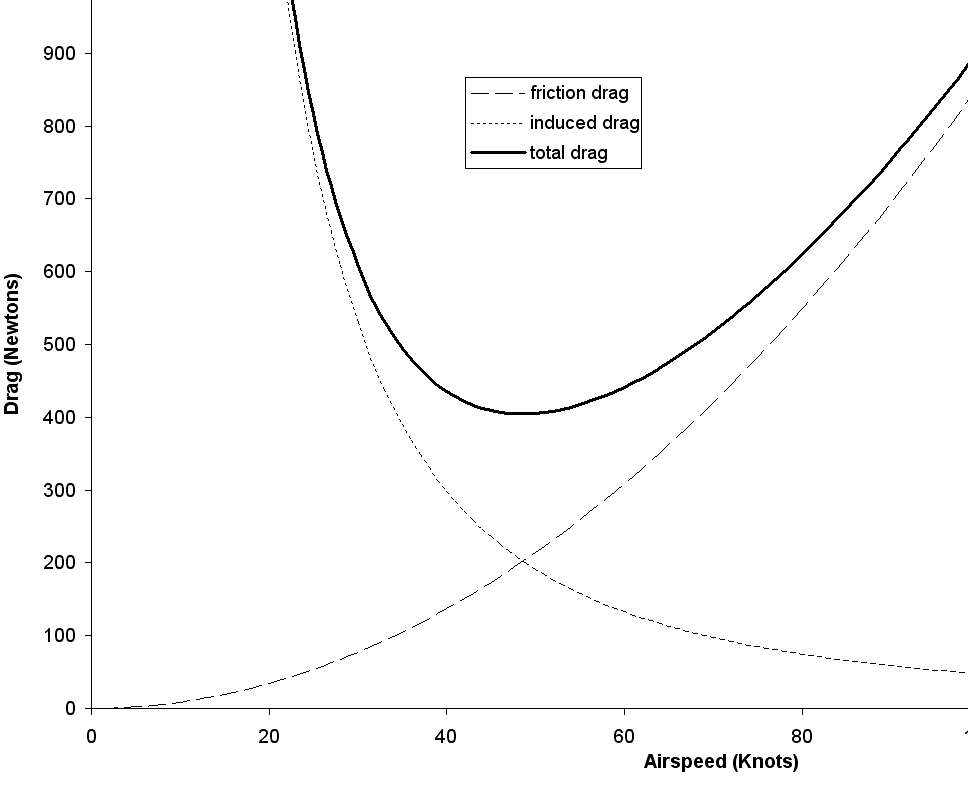
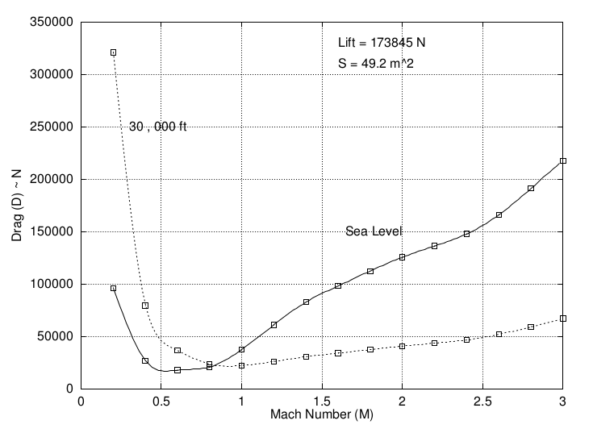

Drag and Drag Coefficient
In moving through the air an aircraft experiences a resistive drag force. This force is made up of several distinct components
Friction drag + Pressure drag + Compression drag + Lift induced drag
Due the effect of camber on the wing minimum drag is usually at a positive lift coefficient to make flight more efficient. So drag coefficient can be related to lift coefficient as
$$C_D=C_{D0}+K(C_L-C_{L0})^2$$
where $C_{D0}$ represents the friction and pressure drag components and $K(C_L-C_{L0})^2$, the lift dependent components.
If the small offset due to camber is neglected then this can be written simply as,
$$C_D=C_{D0}+KC_L^2$$
This lumps friction and pressure components into a constant base drag term and then treats the variation due to friction, pressure and most importantly lift induced drag, as a quadratic function of lift.
The effect of compressibility can be predicted by the use of a correction factor for speeds ranging from M=0.4 up to transonic.
$$C_D={C_{D(incompressible)}}/√{1-M^2}$$
Once a critical Mach number ( $M_{crit}$ ) is reached the flow becomes more complex and drag coefficient increases. Typically $M_{crit}$ ) will be in the range 0.8 to 0.9. For these flows in the transonic region ( M = 0.8 to 1.5 ), mixed subsonic and supersonic regions exist in the flow field and analysis will only be possible using high order numerical codes or by referencing experimental data. After the transonic region ( $M > 1.5$ ), fully supersonic flow is established and $C_D$ can again be predicted using compressible flow gas dynamics equations (see Gas Dynamics Section) for details.
The lift dependent component of drag coefficient can be approximated as $K.{C_L}^2$ where
$$K=1/{πARe}$$
Here $e$ is the wing planform efficiency factor and $AR$ is the wing aspect ratio. Values for these drag constants for various categories of aircraft are shown in the following table.
Nominal Drag values for several class of aircraft.
|
Aircraft Type |
Cdo |
e |
|
Single Engine. Light Aircraft -No Struts |
0.023 |
0.8 |
|
Single Engine. Light Aircraft - With Struts |
0.026 |
0.8 |
|
Multi Engine. Widebody Aircraft |
0.019 |
0.84 |
|
Twin Engine. Widebody Aircraft |
0.017 |
0.85 |
|
Twin Engine. Commuter Aircraft |
0.021 |
0.85 |
|
Military Aircraft with external stores |
0.028 |
0.70 |
|
Vintage Bi-planewith struts and bracing wire |
0.038 |
0.70 |
The consequence of this physics is that most aircraft have a roughly quadratic drag curve for level flight. The graph below shows that there is a minimum drag speed for level flight. Flying slower results in increased drag due to lift induced effects, flying faster increases drag due to friction effects. Attempting to fly below the minimum drag point is problematic and is a “back the front situation”... the slower you go the more drag results.

Drag versus Airspeed (Typical Light A/C).
Minimum Drag Speed
For level flight $\text"Lift" = \text"Weight"$, so the required lift at the various airspeeds should be constant. The speed at which minimum drag occurs is the same as the point at which max $L/D$ or minimum $D/L$ occurs.
$$D/L=C_D/C_L={C_{D0}+KC_L^2}/{C_L}$$
The minimum $D/L$ location can be found by the standard method of differentiation to look for a point of inflection, that minimum $D/L$ or minimum drag occurs when
$$d/{dC_L}({C_{D0}+KC_L^2}/C_L)=0$$
$$d/{dC_L}(C_{D0}/C_L +KC_L)=0$$
$$-C_{D0}/C_L^2+K=0$$
or when
$$C_{D0}=KC_L^2$$
hence
$$C_L=√{C_{D0}/K}$$
By substituting this back into the steady flight equilibrium equation of $L=W$ then an airspeed for minimum drag can be found,
$$W=L=C_L1/2ρV^2S$$
so that
$$V_{min drag}=√{W/{1/2ρS}(K/C_{D0})^{1/2}}$$
Supersonic Drag
For supersonic aircraft the simple parabolic drag approximation is not accurate. Compressible flow effects including shock and expansion waves cause complex variations in drag for both speed and altitude. The following figure shows a typical drag variation for a supersonic aircraft plotted against Mach number.

To get performance results in this case, experimental or flight test data or complex CFD analysis would be required.